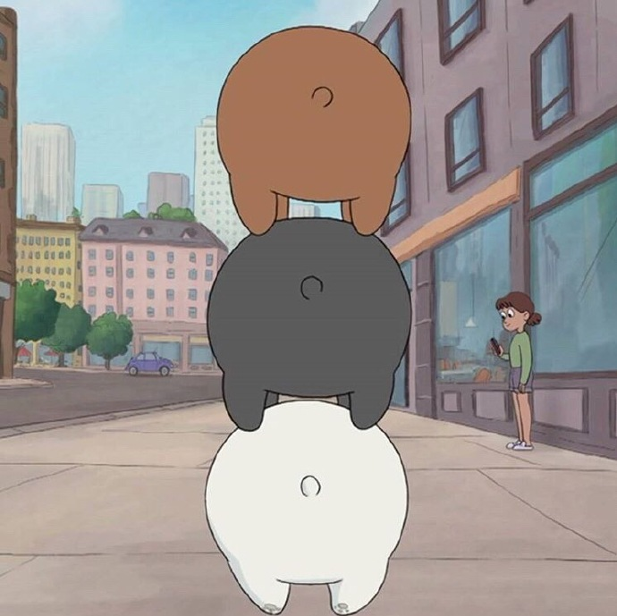
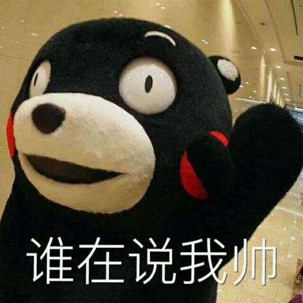
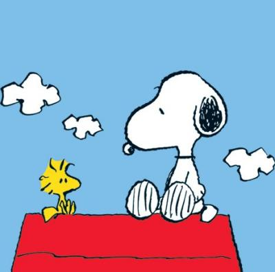

Mr Pan



人生感悟
2016年6月27日，毕业已经快1年，将要在南方的海边度过第一个冬天，那些大学的零零碎碎， 已随风远逝。这里虽没有南京那么冷， 但海边总在起大风，有些凉，也心旷神怡。仔细想想，在远方的那边，除了新认识的这个生活圈，没有旧同学，也没有旧朋友，生活也是蛮励志，不由想起那么句话：纵使疾风起，人生不言弃。其实，如此抛开以往的所有，重新开始一段新的旅程， 少了很多无聊的来往，生活突然变得轻松简单。